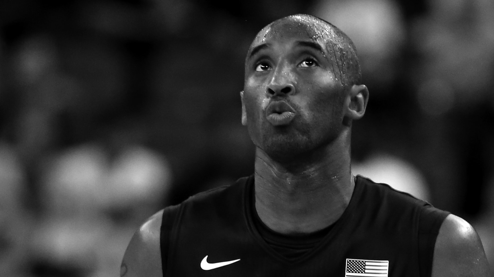
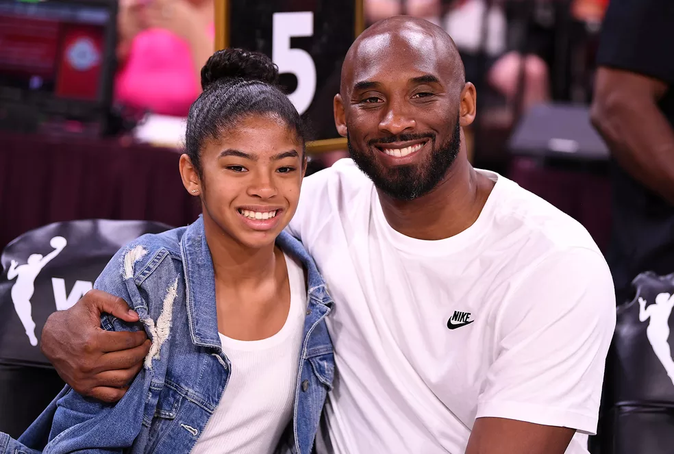

Carreira
Kobe Bryant foi um dos maiores jogadores da história do basquete, na NBA, defendeu o Los Angeles Lakers entre 1996 e 2016. Nesse período, foi pentacampeão da liga. O armador foi eleito o MVP da NBA na temporada 2008. Em 2009 e 2010, ele recebeu o prêmio de melhor jogador das finais. Por 18 vezes, Kobe Bryant esteve no All-Star Game da NBA. Ele foi o MVP do Jogo das Estrelas em 2002, 2007, 2009 e 2011. Maior cestinha da história do Los Angeles Lakers, com 33.643 pontos, Kobe Bryant é também o quarto maior pontuador da NBA em todos os tempos — na véspera de sua morte, ele foi ultrapassado por LeBron James, que atualmente defende a tradicional franquia da Califórnia. Kobe foi o maior cestinha de duas temporadas da NBA: 2006 e 2007. Não era apenas no ataque que Kobe Bryant se destacava. Ele foi eleito para o time ideal de defesa da NBA em nove temporadas. Pela seleção dos Estados Unidos, Kobe foi medalhista de ouro nos Jogos Olímpicos de Pequim, em 2008, e de Londres, em 2012. Foi também campeão mundial, em 2007. Kobe Bryant jogou toda a sua carreira como profissional pelo Los Angeles Lakers. Ele defendeu a franquia entre 1996 e 2016 e conquistou 5 títulos da NBA (2000, 2001, 2002, 2009 e 2010). Ao fim de sua carreira, Kobe foi homenageado pelos Lakers com a aposentadoria das camisas 8 e 24, que vestiu em sua trajetória na liga. Ele é o único jogador que teve dois números aposentados por uma franquia da NBA. O armador é o maior cestinha da história dos Lakers, com 33.643 pontos. Em 22 de janeiro de 2006, Kobe marcou 81 pontos em jogo contra o Toronto Raptors.
Prêmios e Indicações
Kobe Bryant foi campeão da NBA por 5 vezes, em 2000, 2001, 2002, 2009 e 2010. Nos anos dos dois últimos títulos, ele foi eleito o MVP das Finais.O armador foi a principal estrela de uma nova era de glórias do time californiano. Depois da aposentadoria de Magic Johnson, em 1991, os Lakers só voltaram a brigar por títulos quando contrataram o pivô Shaquille O’Neal e trocaram o também pivô Vlade Divac pelo então calouro Kobe Bryant, logo após o draft de 1996. Com a dupla formada por Shaquille O’Neal e Kobe Bryant, e sob o comando do técnico Phil Jackson — que havia sido hexacampeão no Chicago Bulls de Michael Jordan —, os Lakers conquistaram três títulos consecutivos da NBA entre 2000 e 2002.Em 2004, O’Neal deixou a equipe rumo ao Miami Heat. Sem o pivô, coube a Kobe Bryant comandar os Lakers em mais duas conquistas.
- Quarto maior cestinha da história da NBA, com 33.643 pontos
- Maior pontuador da história do Los Angeles Lakers
- Pentacampeão da NBA
- MVP da NBA em 2008
- MVP das Finais da NBA em 2009 e 2010
- Cestinha da NBA nas temporadas 2006 e 2007
- Eleito por 11 vezes para o time ideal da NBA
- Eleito por 9 vezes para o time ideal de defesa da NBA
- Eleito por 18 vezes para o All-Star Game da NBA
- Campeão do torneio de enterradas no All-Star Game da NBA de 1997
- Eleito para o time ideal de calouros da NBA em 1997
- 4 vezes MVP do All-Star Game da NBA
- Números 8 e 24 aposentados pelos Los Angeles Lakers
- Bicampeão das Olimpíadas, em Pequim 2008 e Londres 2012
- Campeão mundial pelos Estados Unidos em 2007
Menções Honrrosas
Falecendo juntamente com sua filha no dia 26 de janeiro de 2020 Kobe deixou uma grande historia marcada na vida de muitas pessoas, pessoas que se inspiravam , se inspiram e que ainda irão se inspirar em sua grande e linda trajetória. Sua essência vive nos corações de pessoas que o admiravam. nunca sera esquecido , estara marcado eternamente na historia do basquete , sendo um dos maiores jogadores que ja presenciamos atuar nas quadras. Que ele esteja sempre em nossas memórias
